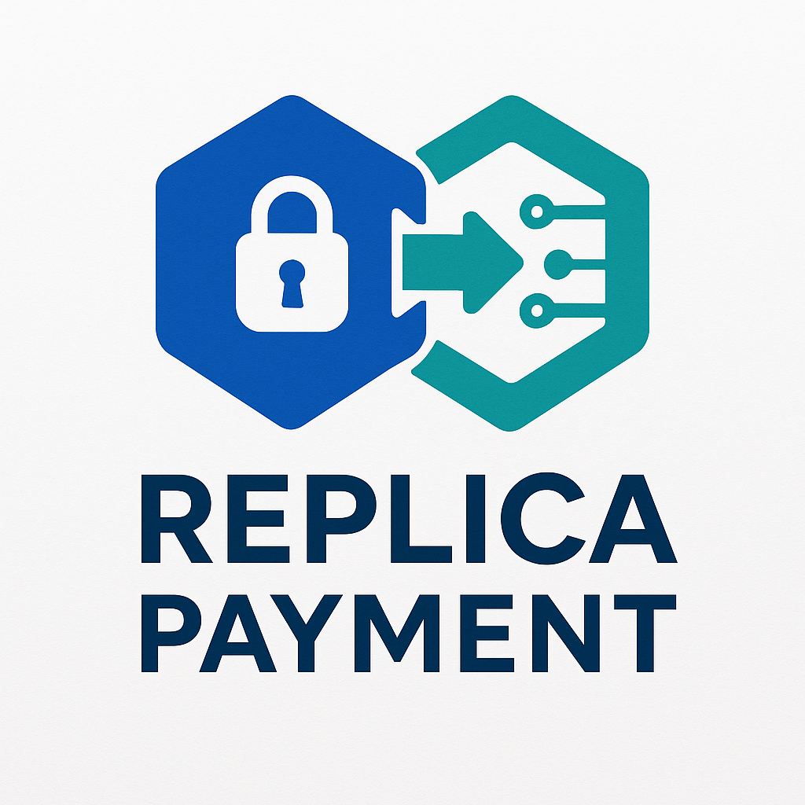

Replica Payment is a demo application that enforces secure cryptocurrency payments before users can interact with an AI-powered digital replica. It integrates the Coinbase x402 protocol with the Sensay API, enabling AI creators to monetize their services through pay-to-chat functionality.
While AI chatbots and digital replicas are becoming increasingly capable, there is no native mechanism to enforce payment before responses are generated. This limits monetization, allows abuse, and creates friction for developers trying to build secure, transaction-gated experiences.
Replica Payment creates a seamless flow where:
No mock environments or toggles — this is a production-ready integration showcasing real-time payment enforcement.
.env for asset, chain, and amountThis approach gives AI creators, platforms, and developers a powerful way to control access, prevent spam, and monetize interactions while maintaining a smooth and trustworthy user experience.
Built by David Orban for the Sensay Hackathon.